Метафорические ассоциативные карты (МАК) — эффективный инструмент, который профессиональные психологи всё чаще применяют в психологическом консультировании и индивидуальных консультациях. Мы составили рейтинг программ обучения на специалиста МАК-терапии, где можно научиться использовать мак карты для работы с любыми запросами клиентов. Обучение проходит в дистанционном формате и подходит для специалистов, стремящихся освоить технику применения метафорических карт и углубить профессиональные навыки. В процессе обучения слушатели изучают методы использования мак в практике, освоят выбору колоды, научатся эффективно применять метафорические карты в групповой и семейной терапии, а также в психологической консультации.
Информация обновлена:
ТОП онлайн-курсов по применению метафорических ассоциативных карт (МАК)
- 🏆 Психолог-практик по метафорическим ассоциативным картам + MBA — МИПО Психология (по промокоду onlinekursy 🎁 скидка 5%)
- 🏆 Применение МАК в психологической практике — Онлайн Институт Smart
- 🏆 «Метафорические ассоциативные карты в практике работы психолога» — НАДПО (по промокоду onlinekursy действует скидка 🎁 5%)
- Метафорические ассоциативные карты — эффективный инструмент в работе психолога — МШПП
- Метафорические ассоциативные карты в практике работы психолога — МИПО (по промокоду onlinekursy действует скидка 🎁 10%)
- Метафорические ассоциативные карты в практике работы психолога — ИПО
- Метафорические ассоциативные карты в практике работы психолога — НЦРДО (по промокоду onlinekursy действует скидка 🎁 5%)
- Метафорические ассоциативные карты в практике работы психолога — ЦАППКК (по промокоду onlinekursy действует скидка 🎁 5%)
- Метафорические ассоциативные карты в работе помогающего специалиста — ИППСС
- Метафорические ассоциативные карты в психологическом консультировании — АНО «НИИДПО»
- Метафорические ассоциативные карты — НЦПО
- Онлайн-курсы метафорических ассоциативных карт — МШП
- Метафорические ассоциативные карты как инструмент работы психолога — НАДПО (по промокоду onlinekursy действует скидка 🎁 5%)
- Практикум по применению метафорических ассоциативных карт в психологическом консультировании — НАДПО (по промокоду onlinekursy действует скидка 🎁 5%)
- Метафорические ассоциативные карты как инструмент работы психолога — НЦРДО (по промокоду onlinekursy действует скидка 🎁 5%)
- Применение метафорических ассоциативных карт в психологическом консультировании — НЦРДО (по промокоду onlinekursy действует скидка 🎁 5%)
- Метафорические ассоциативные карты как инструмент работы психолога — ЦАППКК (по промокоду onlinekursy действует скидка 🎁 5%)
- Практические навыки применения метафорических ассоциативных карт в психологическом консультировании — ЦАППКК (по промокоду onlinekursy действует скидка 🎁 5%)
- Метафорические ассоциативные карты — НЦПО
Бесплатные курсы по обучению МАК-терапии
- ПРАКТИКУМ «Метафорические ассоциативные карты» — IOMP
- Бесплатные МАК-карты «Мне это ценно» — Психодемия
- Бесплатный курс по метафорическим картам с сертификатом — club-woman.ru
Отличительные преимущества каждой дистанционной программы обучения по применению метафорических карт (МАК)
| # | Название курса и школа | Отличительные преимущества | |
|---|---|---|---|
| 🥇 | Психолог-практик по МАК + MBA — МИПО Психология | 3 диплома, бизнес-коучинг, международное приложение к диплому | Перейти |
| 🥈 | Применение МАК в психологической практике – Онлайн Институт Smart | Членство в профассоциациях, 122 акад. часа, поддержка менторов | Перейти |
| 🥉 | МАК в практике психолога – НАДПО | Карьерное сопровождение, доступ к ЛитРес и БиблиоКлубу, 460+ часов | Перейти |
| 4 | МАК — МШПП | Супервизии, демосессии, клуб выпускников | Перейти |
| 5 | МАК в практике — МИПО | Авторские колоды, диплом ФИС-ФРДО, бизнес-коучинг | Перейти |
| 6 | МАК — ИПО | Разработка авторских методик, менторство, бессрочный доступ | Перейти |
| 7 | МАК —НАДПО | 600 часов, налоговый вычет, поддержка HR-эксперта | Перейти |
| 8 | МАК — ЦАППКК | Техподдержка 9–21 без выходных, удобство для слабовидящих | Перейти |
| 9 | МАК в работе помогающего специалиста — ИППСС | Создание своей колоды, фокус на коучинге, бесплатные вебинары | Перейти |
| 10 | МАК в консультировании – АНО НИИДПО | Архив 13 000 вебинаров, супервизии, курс за 3 недели | Перейти |
| 11 | МАК — НЦПО | Гибкая длительность (250–1600 ч), срочная выдача документов | Перейти |
| 12 | Онлайн-курсы МАК — МШП | Маткапитал, 70 000 выпускников, практика на реальных кейсах | Перейти |
| 13 | МАК как инструмент работы психолога — НАДПО | Фокус на глубинную работу с подсознанием, 2 месяца | Перейти |
| 14 | Практикум по МАК в консультировании — НАДПО | ТОП-3 онлайн-школа, 59 часов, ежемесячный кешбэк | Перейти |
| 15 | МАК как инструмент — НЦРДО | Проработка травм и утрат, практика онлайн-сессий | Перейти |
| 16 | Применение МАК в консультировании — НЦРДО | Подходит для студентов, резидент Сколково, 59 часов | Перейти |
| 17 | МАК как инструмент — ЦАПКК | Бессрочный доступ, аудиолекции, авторские методики | Перейти |
| 18 | Практические навыки МАК — ЦАППКК | Занятия по пятницам, онлайн с преподавателем, собственные упражнения | Перейти |
| 19 | МАК — НЦПО& | Удостоверение за 1 день, 72–144 ч, подходит для медиков | Перейти |
1. 🏆 Психолог-практик по метафорическим ассоциативным картам + MBA — Московский Институт Профессионального Образования
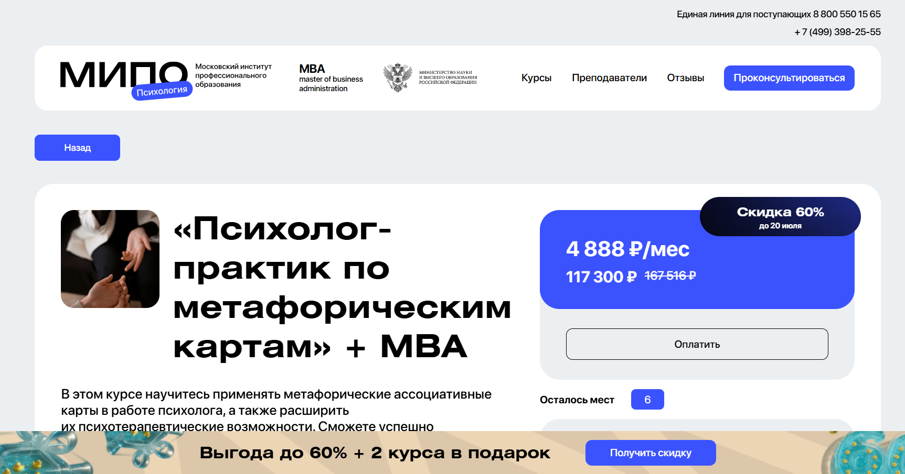
- ✅ Официальный сайт: mipoin.ru
- 💸 Цена: 117 300 ₽ со скидкой 60% (обычная цена 167 516 ₽)
- 💳 Рассрочка: от 4 888 ₽ в месяц
- 📚 Формат: дистанционный формат, видеолекции, домашние задания, тестирования, вебинары с экспертами
- ⏳ Продолжительность: 15 месяцев
- 📜 Документ: три диплома о профессиональной переподготовке, две квалификации и международное приложение к диплому
- 📝 Трудоустройство: возможность начать практику сразу после окончания курса
- 🔷 Для кого подходит курс: для начинающих специалистов, практикующих психологов, коучей, желающих повысить квалификацию или сменить профессию
Особенности:
Программа позволяет научиться эффективно использовать метафорические ассоциативные карты в психологической практике. Удобный дистанционный формат обучения подходит для совмещения с работой или личными делами. Курс включает работу с разнообразными колодами, в том числе OH, Persona и MORENA. Включены навыки по психологическому консультированию, групповым консультациям и бизнес-коучингу. Благодаря практическим заданиям студенты сразу начинают применять знания для работы с клиентами. Освоение МАК карт помогает решать сложные психологические запросы, раскрывая внутренние ресурсы человека. Программа построена таким образом, чтобы знания могли использоваться как в профессиональной деятельности, так и в личных целях. После завершения обучения выдается официальный диплом установленного образца.
Чему учатся студенты:
- Научиться применять метафорические карты в психотерапии и психологическом консультировании
- Освоить методы диагностики и выбора колоды под запрос клиента
- Изучить когнитивно-поведенческую и гуманистическую психотерапию
- Работать с тревожными состояниями, депрессией, запросами из семейного консультирования
- Развить навыки бизнес-коучинга и карьерного консультирования
- Эффективно взаимодействовать с клиентами в дистанционном формате
Преподаватели:
- Урывчикова Татьяна — нейропсихолог, клинический психолог, член Ассоциации КПТ
- Шарова Кристина — член Психотерапевтической Лиги, специалист по транзактному анализу
- Круглушина Олеся — консультирующий психолог, выпускник МГОУ
- Пронькина Анастасия — специалист по гештальт-терапии, выпускник МГУ
- Череменская Мария — семейный психолог, автор книг
- Шушкина Людмила — философ, религиовед, преподаватель МГУ
- Рыбальченко Наталья — научный специалист, бизнес-тренер
- Дарменко Елена — кандидат экономических наук, доцент МГТУ и МГИМО
- Лебедев Александр — гипнотерапевт, юрпсихолог, тренер
- Лаврова Юлия — семейный психолог, ведущая тренингов
- Латынцева Ольга — преподаватель
Преимущества:
- Совмещение практической психологии и бизнес-коучинга в одном курсе
- Дистанционный формат — удобно для занятых студентов
- Выбор и работа с различными авторскими колодами
- Фокус на реальных запросах клиентов и применении в практике
- Поддержка преподавателей и кураторов в Telegram-чате
- Доступ к учебным материалам сразу после старта обучения
- Получение сразу трёх дипломов по завершению обучения
- Пробный урок и консультация бесплатно
Отзывы учеников:
Студенты хвалят гибкий график, актуальные материалы и профессиональный подход кураторов. Многие отмечают, что курс помог им научиться применять МАК карты в реальных консультациях, повысить стоимость услуг и сменить профессию. Особенно выделяют удобный формат обучения и возможность совмещать с работой.
Перейти на официальный сайт курса2. 🏆 Применение МАК в психологической практике – Онлайн Институт Smart
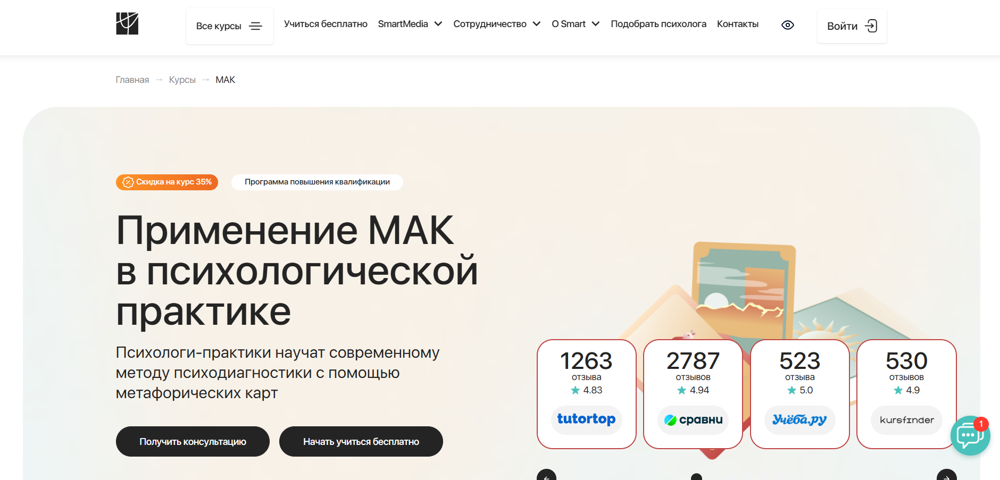- ✅ Официальный сайт: smart-inc.ru
- 💸 Цена: 29 900 ₽ (со скидкой -35%).
- 💳 Рассрочка: от 2 492 ₽/мес, первый платёж через месяц, до 12 месяцев без переплат.
- 📚 Формат: дистанционное обучение, видеолекции 24/7, практические задания, итоговый тест, поддержка тьюторов и менторов.
- ⏳ Продолжительность: 4 месяца, 122 академических часа.
- 📜 Документ: удостоверение о повышении квалификации.
- 📝 Трудоустройство: поддержка выпускников, возможность вступить в профессиональные сообщества.
- 🔷 Для кого подходит курс: начинающим и практикующим психологам, коучам, педагогам, HR-специалистам и всем, кто хочет освоить метафорические методы работы с людьми.
Особенности:
Курс предлагает обучение техникам работы с метафорическими ассоциативными картами в дистанционном формате с доступом с любого устройства. Программа создана практикующими психологами и включает пошаговую систему освоения инструментов для диагностики и консультирования. Участники получают практический опыт применения МАК на консультациях, в коучинге и образовании. Студенты работают с тьюторами, получают обратную связь, осваивают методы выбора и интерпретации колод. Курс актуален как для начинающих специалистов, так и для профессионалов, желающих расширить свои возможности в психологической практике. Обучение проходит через интерактивную платформу, включая видеоуроки, практикумы, проверку заданий и постоянную поддержку. Удостоверение государственного образца выдается после успешного завершения.
Чему учатся студенты:
- Использовать мак карты в индивидуальном и групповом консультировании
- Применять техники работы с образами и ассоциациями клиента
- Определять уместность использования МАК при разных запросах
- Выбирать подходящие колоды под конкретные цели
- Интегрировать МАК в личную психологическую практику
- Работать с клиентскими ограничениями и психотравмами
- Проводить психологическую консультацию с использованием проективных техник
Преподаватели:
- Лилия Мишина — когнитивно-поведенческий терапевт, арт-терапевт, травматерапевт, супервизор, автор МАК «Так ПРОСТО» и «Путь к Переменам», более 20 научных публикаций.
- Ирина Перемолотова — практикующий психолог, преподаватель, эксперт по работе с метафорическими ассоциативными картами.
Преимущества:
- Поддержка тьюторов и менторов на всех этапах обучения
- Современные техники применения метафорических карт для любых психологических запросов
- Гибкий график: обучение в любом удобном месте и времени
- Государственное удостоверение о повышении квалификации
- Доступ к платформе и материалам на 1 год
- Членство в ОППЛ и АППП на льготных условиях
- Подходит даже тем, кто только начинает путь в психологии
Отзывы учеников:
Студенты отмечают профессионализм преподавателей, простоту подачи материала и отличную организацию процесса. Многие подчеркивают, что курс помогает научиться применять мак в реальной практике и уверенно работать с клиентами. Особенно ценится обратная связь от кураторов и поддержка на протяжении всего обучения.
Перейти на официальный сайт курса3. 🏆 «Метафорические ассоциативные карты в практике работы психолога» – Национальная академия дополнительного профессионального образования
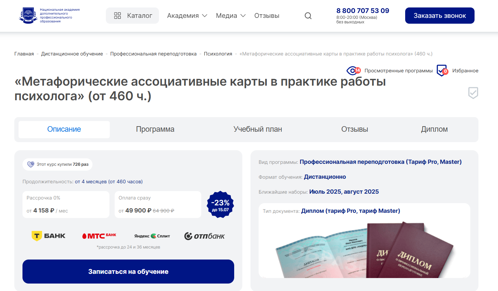
- ✅ Официальный сайт: nadpo.ru
- 💸 Цена: от 49 900 ₽ (до 64 900 ₽ со скидкой 23% ).
- 💳 Рассрочка: от 4 158 ₽/мес, доступна до 24–36 месяцев, 0% переплат.
- 📚 Формат: дистанционный формат — видеоматериалы, практические занятия, задания, тесты, доступ к библиотекам ЛитРес и БиблиоКлуб.
- ⏳ Продолжительность: от 4 месяцев, от 460 часов.
- 📜 Документ: диплом о профессиональной переподготовке (Pro и Master тарифы).
- 📝 Трудоустройство: карьерная поддержка, консультации с HR-куратором, предложения от партнёров во время обучения.
- 🔷 Для кого подходит курс: для профессиональных психологов, консультантов, специалистов в сфере психологии, желающих освоить технику МАК и научиться применять её в практике.
Особенности:
Курс позволяет изучить эффективные методы работы с метафорическими ассоциативными картами и освоить способы их применения в индивидуальной и групповой психологической практике. Обучение проходит в дистанционном формате с гибким графиком, что делает его удобным для совмещения с работой. Студенты получают доступ к цифровым библиотекам, проходят практику сразу после старта и работают с реальными кейсами. Предусмотрена поддержка кураторов и карьерная помощь. Программа подходит как для начинающих, так и для практикующих специалистов. Более 30% содержания — это практика. Курс соответствует требованиям ФГОС, поэтому полученные документы обладают юридической силой.
Чему учатся студенты:
- Применению МАК-техник в психологическом консультировании
- Анализу ассоциативных образов и интерпретации картинок
- Работе с телесными зажимами и психосоматикой через проективные методики
- Навыкам выбора колод под разные запросы клиентов
- Проведению консультаций в индивидуальном и групповом формате
- Использованию универсальных колод и авторских методик
Преподаватели:
- Информация о преподавателях на сайте не указана
Преимущества:
- Обучение онлайн без привязки к месту
- Поддержка на всех этапах обучения и после окончания курса
- Гибкая система оплаты и беспроцентная рассрочка
- Доступ к учебным материалам и библиотекам
- Высокий процент практических занятий — более 30%
- Работа с реальными кейсами и жизненными ситуациями клиентов
- Курс соответствует госстандартам, как в вузе, но за 4 месяца
- После обучения можно начать частную практику
Отзывы учеников:
Слушатели курса часто отмечают удобный формат обучения, насыщенную практическую часть, доступность материалов и возможность совмещать обучение с работой. Положительно оценивают поддержку кураторов и гибкую систему рассрочки. МАК-карты в сочетании с профессиональными техниками дают возможность глубже понимать запросы клиентов.
Перейти на официальный сайт курса4. Метафорические ассоциативные карты — эффективный инструмент в работе психолога — МШПП
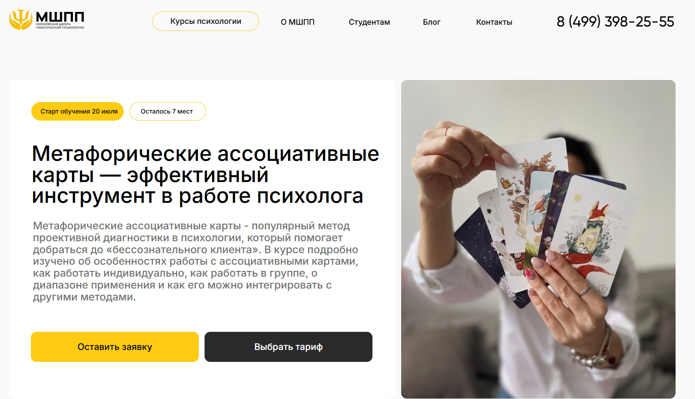
- ✅ Официальный сайт: mspp.online
- 💸 Цена: полная стоимость — 50 000 ₽
- 💳 Рассрочка:от 2 090 ₽ в месяц от 3 до 36 месяцев от школы и банков-партнёров
- 📚 Формат: дистанционный формат — видеолекции, домашние задания, тесты, супервизии, вебинары
- ⏳ Продолжительность: 4 недели (54 академических часа + 16 часов практики)
- 📜 Документ: удостоверение установленного образца о повышении квалификации
- 📝 Трудоустройство: карьерный центр помогает пройти собеседование, испытательный срок и выбрать работодателя
- 🔷 Для кого подходит курс: для студентов, начинающих, действующих психологов, желающих научиться применять метафорические ассоциативные карты в психологической практике
Особенности:
Программа обучения создана для тех, кто хочет освоить применение мак картам в индивидуальных и групповых консультациях. Студенты учатся работать с запросами клиентов, применять технику в дистанционном формате, анализировать психологические проблемы через метафорические образы. Благодаря поддержке кураторов и преподавателей, освоение методов проходит с обратной связью. Используется удобная платформа, где собраны все материалы и доступ открыт навсегда. После завершения курса выдаётся официальный документ. МАК подходит для частной практики, помогает клиенту разобраться в бессознательных состояниях и расширяет профессиональные навыки.
Чему учатся студенты:
- Понимать принципы выбора колоды и применять ассоциативные карты по типу запроса
- Анализировать внутренние процессы клиента при помощи мак
- Находить подход к работе с различными психологическими запросами
- Сочетать использование мак с другими методами консультирования
- Проводить психологическую консультацию с опорой на визуальные образы
- Применять технику в групповых и индивидуальных форматах
- Работать с детьми, взрослыми и в семейной терапии
Преподаватели:
- Программа разработана 40 экспертами — практикующими психотерапевтами и психологами
- Каждый преподаватель курса — профессиональный психолог с действующей практикой
Преимущества:
- Обучение с нуля без необходимости психологического образования
- Много практики: демосессии, работа в тройках, супервизии
- Доступ к библиотеке, материалам и клубу выпускников
- Возможность совмещать обучение с работой благодаря удобному графику
- Курс подходит для дистанционного освоения профессии
- Поддержка 24/7 от преподавателей и кураторов
- Бонусные модули по продвижению психолога и работе онлайн
Отзывы учеников:
Студенты часто выделяют удобный дистанционный формат, высокую квалификацию преподавателей и обилие практики. Отмечают, что научились использовать мак в работе с реальными клиентами, улучшили профессиональные навыки и получили уверенность в себе как специалисте.
Перейти на официальный сайт курса5. Метафорические ассоциативные карты в практике работы психолога – Московский Институт Профессионального Образования
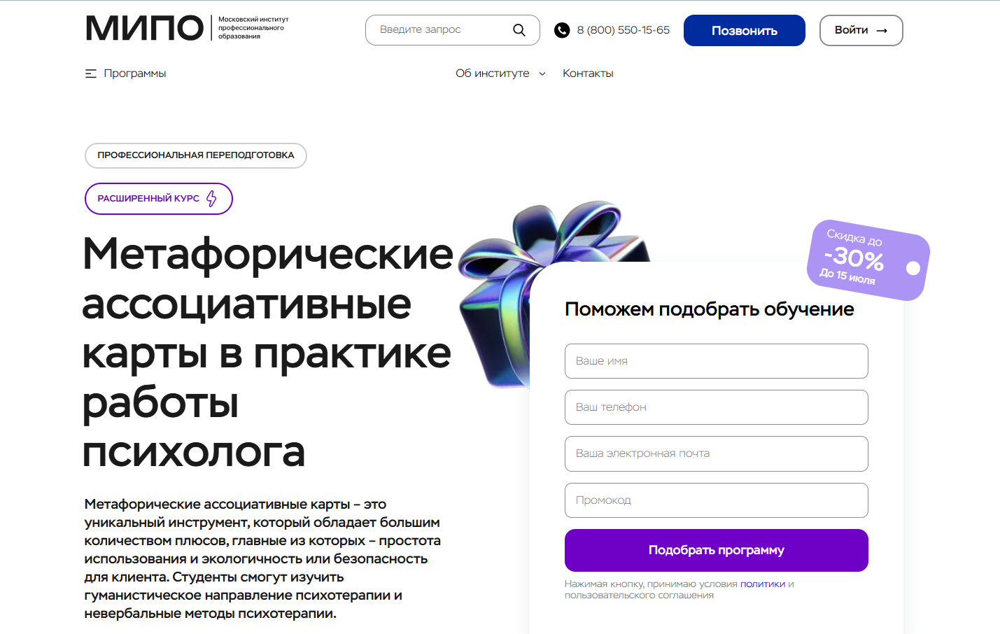
- ✅ Официальный сайт: mipo.msk.ru
- 💸 Цена: от 60 618 ₽ (со скидкой до 30%)
- 💳 Рассрочка: до 24 месяцев, от 2 527 ₽/мес
- 📚 Формат: дистанционный формат обучения, видеоуроки, вебинары, тесты, практические задания, общение в чатах, сопровождение куратора
- ⏳ Продолжительность: 7 месяцев / 576 часов
- 📜 Документ: диплом о профессиональной переподготовке, зарегистрированный в ФИС-ФРДО
- 📝 Трудоустройство: карьерный центр, помощь в выходе на частную практику
- 🔷 Для кого подходит курс: для начинающих, практикующих специалистов, желающих официально подтвердить квалификацию, и всех, кто хочет использовать метафорические ассоциативные карты в личных целях
Особенности:
Обучение проходит в удобном дистанционном формате, который позволяет совмещать освоение профессии с работой. Программа охватывает как гуманистические, так и невербальные подходы, акцент делается на практическом применении метафорических карт в психологическом консультировании. В курсе студенты научатся использовать мак в индивидуальных и групповых консультациях, изучат авторские и универсальные колоды, освоят методы выбора карт по запросам клиентов. Преподавание ведется ведущими российскими экспертами с опытом более 7 лет. Завершив обучение, выпускники получают диплом, подтверждающий квалификацию, и могут официально работать в сфере психологии.
Чему учатся студенты:
- Применять метафорические карты в практике
- Использовать различные колоды: OH, Persona, Saga, MORENA, ОДИНОЧЕСТВО
- Осваивать методы гуманистической и невербальной психотерапии
- Изучать профессиональную этику психолога
- Разбираться в психотерапии тревожных состояний
- Выбирать карты по темам и запросам клиентов
Преподаватели:
- Урывчикова Татьяна Геннадьевна — клинический психолог, член ассоциации когнитивно-поведенческой психотерапии
- Перемолотова Ирина Александровна — практикующий психолог, арт-терапевт, член ICI
- Цяпало Анна — профессиональный психолог, сертифицированный сексотерапевт, член ассоциации психоаналитического коучинга
- Миркина Елена — клинический психолог, президент фонда развития человеческого потенциала
- Сальникова Дарья — специальный психолог, научный сотрудник РАО
- Балобанов Василий — семейный психолог, автор курса «Семейный консультант», эксперт Первого канала
Преимущества:
- Обучение проходит в дистанционном формате с применением современных платформ
- Можно совмещать с работой и личной жизнью
- Программа подходит для начинающих и практикующих психологов
- Диплом официального образца зарегистрирован в ФИС-ФРДО
- Доступ к практическим материалам, кейсам и видеоурокам
- Куратор на протяжении всего обучения
- Возможность освоить авторские и универсальные колоды для работы с любыми клиентскими запросами
Отзывы учеников:
Студенты отмечают удобный формат дистанционного обучения, структурированность курса, внимание кураторов и преподавателей, а также большое количество практики. Особенно хвалят подход к обучению работе с мак и поддержку при выходе в частную практику.
Перейти на официальный сайт курса6. Метафорические ассоциативные карты в практике работы психолога – Институт Профессионального Образования
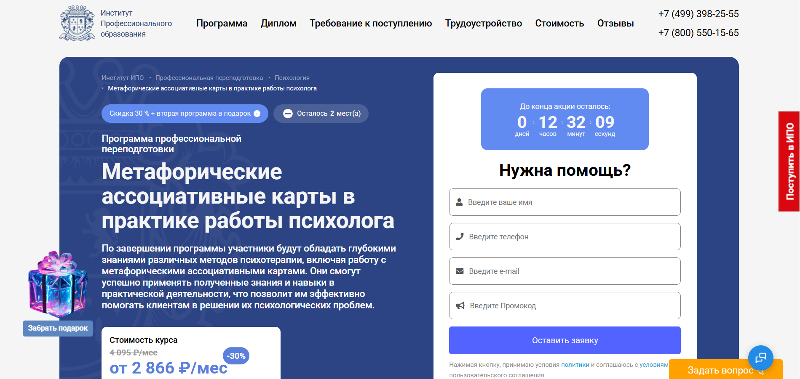- ✅ Официальный сайт: ipo.msk.ru
- 💸 Цена обучения: от 68 798 ₽ (скидка 30%, полная стоимость 98 283 ₽)
- 💳 Рассрочка: от 2 866 ₽/мес на 24 месяца
- 📚 Формат: дистанционный: видеоуроки, вебинары, домашние задания, тесты, практика, поддержка куратора
- ⏳ Продолжительность: 7 месяцев (576 часов)
- 📜 Документ: диплом о профессиональной переподготовке с правом вести консультации
- 📝 Трудоустройство: карьерные консультации, подготовка резюме, помощь с вакансиями и собеседованиями
- 🔷 Для кого подходит курс: начинающим психологам, практикующим специалистам, а также помогающим практикам из смежных сфер
Особенности:
Программа предлагает освоение метафорических ассоциативных карт (МАК) как инструмента психологического консультирования в дистанционном формате. Студенты учатся применять карты в индивидуальных и групповых сессиях, выбирать подходящие колоды, разрабатывать авторские упражнения. Курс сочетает теорию, практические задания и живое общение с менторами. Программа помогает развить навыки интерпретации образов, понимания бессознательных процессов и работы с разными запросами клиентов. Гибкий график, бессрочный доступ к материалам и онлайн-формат делают обучение удобным для совмещения с работой.
Чему учатся студенты:
- Использовать МАК в индивидуальных и групповых консультациях
- Работать с визуальными и эмоциональными ассоциациями клиентов
- Выбирать колоды под разные психологические запросы
- Проводить терапевтические сессии с помощью МАК
- Интегрировать ассоциативные карты в системную психотерапию
- Разрабатывать авторские методики и упражнения
Преподаватели:
- Татьяна Геннадьевна Урывчикова — нейропсихолог, клинический психолог, член Ассоциации когнитивно-поведенческой психотерапии
- Наталья Викторовна Рыбальченко — профессиональный психолог, преподаватель философии
- Наталья Николаевна Бербер — кандидат психологических наук, профессиональный психолог
Преимущества:
- Применение МАК для работы с бессознательными процессами
- Гибкий формат дистанционного обучения на удобной платформе
- Бессрочный доступ ко всем учебным материалам
- Диплом государственного образца с правом консультировать
- Поддержка менторов и преподавателей на всех этапах обучения
- Возможность совмещать курс с работой
- Дополнительные курсы и бонусы включены в стоимость
- Карьерное сопровождение и помощь в поиске работы
Отзывы учеников:
Студенты отмечают высокий уровень подготовки преподавателей, большое количество практики и обратной связи. Среди частых плюсов — понятные видеоуроки, доступность материалов, поддержка кураторов, удобный график и польза МАК в работе с клиентами.
Перейти на официальный сайт курса7. Метафорические ассоциативные карты в практике работы психолога – Национальный центральный институт развития дополнительного образования
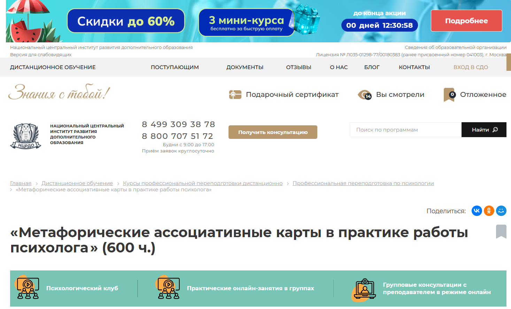
- ✅ Официальный сайт: ncrdo.ru
- 💸 Цена: 42 300 ₽ (вместо 98 600 ₽)
- 💳 Рассрочка: 1 175 ₽/мес на 36 месяцев
- 📚 Формат: дистанционный формат: видеолекции, аудиолекции, домашние задания, онлайн-занятия, тесты, практикумы
- ⏳ Продолжительность: 5 месяцев / 600 часов
- 📜 Документ: диплом о профессиональной переподготовке
- 📝 Трудоустройство: поддержка от HR-эксперта, консультации по карьере, помощь в составлении плана развития
- 🔷 Для кого подходит курс: для психологов, коучей, педагогов, специалистов помогающих профессий и всех, кто хочет научиться работать с метафорическими картами
Особенности:
Обучение проходит в дистанционном формате на удобной платформе, что позволяет совмещать обучение с работой. В курсе акцент сделан на практическом применении МАК, благодаря чему слушатели получают реальные инструменты для работы с клиентами. Поддержка преподавателя осуществляется онлайн, возможны групповые консультации. Также предусмотрены практикумы, работа с универсальными и авторскими колодами, а также освоение техник, подходящих под разные запросы клиентов. По окончании обучения выдается диплом установленного образца, а данные вносятся в федеральный реестр. Бесплатный доступ к Библиоклубу и ЛитРес включён в стоимость курса.
Чему учатся студенты:
- Применению метафорических ассоциативных карт в психологической консультации
- Анализу мак-карт и выбору колоды под конкретный запрос
- Использованию МАК в индивидуальной и групповой терапии
- Работе с детскими, семейными и кризисными ситуациями через проективные методики
- Освоению техник работы с психосоматикой и внутренними конфликтами
- Использованию МАК в коучинговой практике
- Проведению сессий онлайн с учетом формата дистанционного консультирования
Преподаватели:
- Мельникова Елена Васильевна — опыт научно-практической деятельности с 2010 года
- Тышкевич Марина Юрьевна — с 2006 года в психологии, эксперт по МАК
- Шевченко Дария Игоревна — практикующий психолог, с 2018 года
- Салихова Мария Романовна — в сфере психологии с 2007 года
Преимущества:
- Современный дистанционный формат с возможностью учиться в любое время
- Практическая направленность курса — навыки применимы сразу после обучения
- Профессиональная переподготовка с дипломом, вносимым в федеральный реестр
- Гибкий график, который легко совмещается с основной работой
- Доступ к материалам и обновлениям курса остается навсегда
- Возможность получения налогового вычета — возврат 13% от стоимости
- HR-консультации и карьерная поддержка после окончания обучения
Отзывы учеников:
Слушатели курса отмечают высокое качество преподавания, удобную дистанционную форму обучения, большое количество практических упражнений. Подчеркивают пользу работы с различными колодами мак-карт, возможность применять техники сразу в работе с клиентами и помощь преподавателей в освоении методики.
Перейти на официальный сайт курса8. Метафорические ассоциативные карты в практике работы психолога – Центральная академия профессиональной переподготовки и повышения квалификации кадров
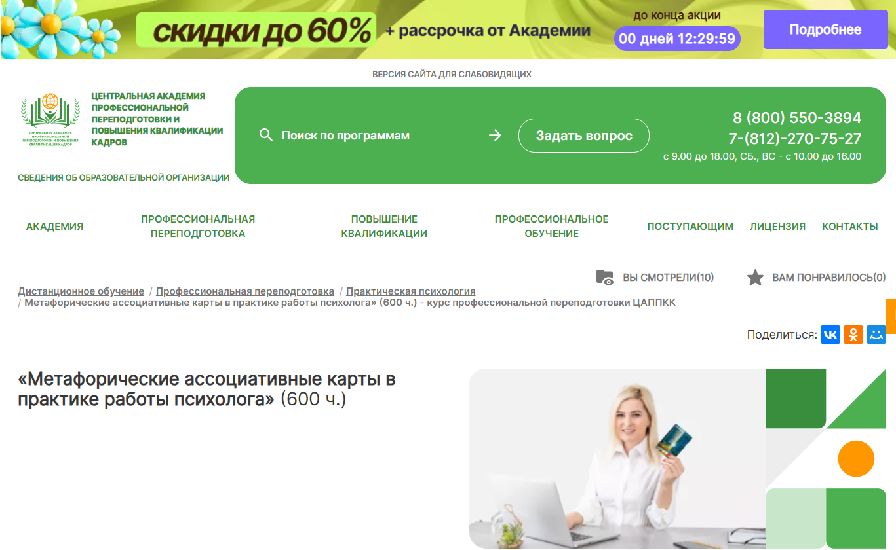
- ✅ Официальный сайт: appkk.ru
- 💸 Цена: 38 900 ₽ (со скидкой от 47 300 ₽)
- 💳 Рассрочка: от 1 081 ₽ в месяц на 36 месяцев
- 📚 Формат: дистанционный формат, заочные занятия с применением видеолекций, тестов, заданий, доступ к вебинарам и библиотеке
- ⏳ Продолжительность: 5 месяцев (600 часов)
- 📜 Документ: диплом о профессиональной переподготовке, сведения вносятся в ФИС ФРДО
- 📝 Трудоустройство: поддержка HR-наставника, помощь в составлении резюме, поиск вакансий
- 🔷 Для кого подходит курс: профессиональных психологов, студентов и специалистов со средне-профессиональным или высшим образованием
Особенности:
Программа дистанционного обучения создана для тех, кто хочет освоить методы применения метафорических карт в психологической практике. Материалы курса разработаны с учетом требований ФГОС и профессиональных стандартов. Применение метафорических ассоциативных карт позволяет психологу работать с различными запросами клиентов, включая сложные эмоциональные состояния. Удобный формат позволяет совмещать обучение с работой. Все материалы доступны в личном кабинете круглосуточно. Курсанты получают бессрочный доступ к контенту, включая вебинары и аудиолекции. Поддержка осуществляется ежедневно с 9:00 до 21:00.
Чему учатся студенты:
- Научиться применять метафорические карты в индивидуальных и групповых консультациях
- Выбирать подходящие колоды под задачи клиента
- Работать с метафорическими образами для диагностики и терапии
- Использовать МАК как дополнительный инструмент психологической помощи
- Осваивать технику работы с интуицией и внутренними состояниями клиента
Преподаватели:
- Куратор курса – профессиональный преподаватель-практик с опытом разработки авторских методик
- Анастасия Регнер — HR-наставник, бизнес-тренер с более чем 3 годами практики, участник международных конференций, специалист по стратегическим коммуникациям
Преимущества:
- Бессрочный доступ к материалам курса и вебинарам
- Техподдержка без выходных с 9:00 до 21:00
- Доступ к платформе БиблиоКлуб и аудиолекциям
- Обучение без отрыва от работы и в удобное время
- Документ государственного образца, вносимый в реестр ФИС ФРДО
- Помощь в трудоустройстве и карьерном сопровождении после обучения
- Платформа подходит для слабовидящих пользователей
Отзывы учеников:
Слушатели отмечают практическую направленность обучения, простоту в подаче материала и поддержку кураторов. Отдельно выделяют актуальность тем, удобство платформы и возможность использовать полученные навыки в реальной работе с клиентами. Курсанты ценят доступность всех материалов после окончания обучения и регулярную обратную связь.
Перейти на официальный сайт курса9. Метафорические ассоциативные карты в работе помогающего специалиста — Институт прикладной психологии в социальной сфере
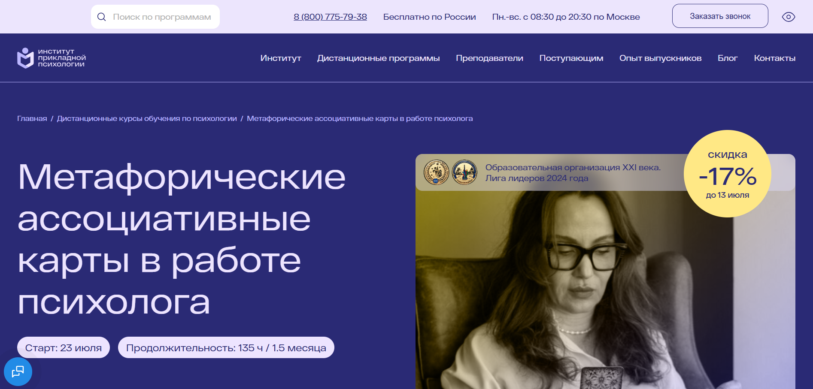- ✅ Официальный сайт: ippss.ru
- 💸 Цена: 22 600 ₽ ( вместо 27 100 ₽)
- 💳 Рассрочка: доступна от 1 883 ₽ в месяц, уточняется при оформлении заявки
- 📚 Формат: дистанционный формат: видеолекции, конспекты, практические задания, тесты, супервизии, вебинары
- ⏳ Продолжительность: 1,5 месяца / 135 академических часов
- 📜 Документ: удостоверение о повышении квалификации установленного образца
- 📝 Трудоустройство: документ регистрируется в ФИС ФРДО и даёт право официально оказывать психологическую помощь
- 🔷 Для кого подходит курс: для профессиональных психологов, коучей и специалистов, применяющих проективные методы в практике
Особенности:
Программа разработана по профстандарту «Психолог в социальной сфере» и учитывает реальные запросы клиентов. Обучение проходит в дистанционном формате без необходимости высшего психологического образования. Студенты получают доступ к 10+ электронным колодам и создают собственную. Курс помогает освоить технику применения мак-карт в индивидуальной и групповой терапии, а также в семейном консультировании. В программу включены супервизии, консультации с экспертами и обратная связь по заданиям. Преподаватели демонстрируют техники в действии, что повышает уровень профессиональных навыков. После окончания обучения выдаётся документ, зарегистрированный в ФИС ФРДО.
Чему учатся студенты:
- Научиться применять метафорические карты в работе с детьми, подростками и взрослыми
- Использовать мак-карты в психологическом консультировании и коуч-сессиях
- Создавать авторские колоды под конкретные запросы клиентов
- Определять подходящие колоды для различных уровней взаимодействия
- Изучать техники проективной работы с образами
- Применять инструменты в офлайн- и онлайн-форматах
Преподаватели:
- Камышникова Анна Валерьевна — карьерный и командный коуч, супервизор, тренер коучей, сертифицированный специалист ICF
- Кусачева Марина Юрьевна — профессиональный психолог, бизнес-тренер, сертифицированный коуч ICF, супервизор
Преимущества:
- Дистанционное обучение без вступительных экзаменов
- Выдача удостоверения о повышении квалификации с регистрацией в ФИС ФРДО
- Возможность освоить технику работы с мак-картами с нуля
- Практические задания с обратной связью от преподавателей
- Доступ к 10 000+ записей вебинаров по психологии
- Создание авторской колоды под свой профессиональный стиль
- Поддержка специалистов на всех этапах обучения
Отзывы учеников:
Слушатели отмечают, что курс помогает научиться эффективно использовать мак-карты в работе с реальными запросами. Подчеркивают простоту подачи материала, насыщенность практикой и поддержку преподавателей. Преимуществом считают формат онлайн, возможность учиться в любом месте и доступ к большим базам знаний.
Перейти на официальный сайт курса10. Метафорические ассоциативные карты в психологическом консультировании – АНО «НИИДПО»
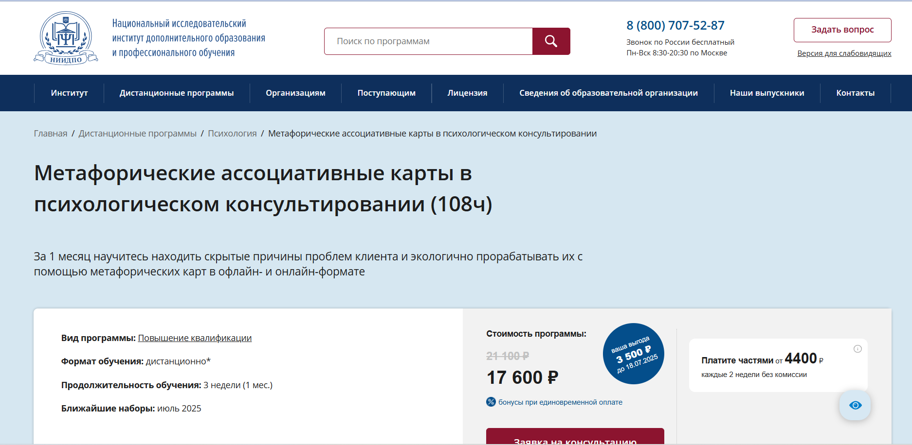
- ✅ Официальный сайт: niidpo.ru
- 💸 Цена: 21 100 ₽ (со скидкой 17 600 ₽ )
- 💳 Рассрочка: от 4 400 ₽ каждые 2 недели, без комиссии
- 📚 Формат: дистанционный формат — видеоуроки, текстовые лекции, тесты, практические задания, вебинары
- ⏳ Продолжительность: 3 недели
- 📜 Документ: удостоверение о повышении квалификации установленного образца
- 📝 Трудоустройство: повышение профессиональных навыков для психологов, педагогов и коучей
- 🔷 Для кого подходит курс: для профессиональных психологов, педагогов, воспитателей, HR, коучей и всех, кто интересуется психологией
Особенности:
Программа повышения квалификации по работе с метафорическими ассоциативными картами дает возможность в короткие сроки освоить методы, применяемые в индивидуальных и групповых консультациях. Обучение проходит полностью в дистанционном формате, включая теорию и практику. После завершения курса студенты получают доступ к бонусным вебинарам и архиву из более чем 13 000 записей. Курс подходит как для офлайн, так и онлайн-практики. Студенты учатся экологично применять технику для решения психологических проблем, находить внутренние ресурсы клиента и корректно интерпретировать образы. Программа разработана с учетом особенностей дистанционного образования и содержит только актуальные методики.
Чему учатся студенты:
- Применению мак-карт для работы с любыми запросами клиентов
- Навыкам выбора колоды под конкретный случай
- Построению структуры психологической консультации
- Техникам глубинной и диагностической работы
- Работе в офлайн- и онлайн-формате
- Анализу результатов и корректировке консультационного процесса
- Использованию мак в работе с самооценкой, отношениями, мотивацией
- Применению метафорических карт для самопознания и личностного роста
Преподаватели:
- Кусачева Марина Юрьевна — сертифицированный коуч (ICF), супервизор коучей, профессиональный психолог, бизнес-тренер, специалист по работе с метафорическими ассоциативными картами
Преимущества:
- Доступ к материалам курса навсегда после завершения обучения
- Бонусные вебинары от экспертов ежемесячно с сертификатами
- 13 000+ записей прошедших вебинаров в открытом доступе
- Возможность задавать вопросы напрямую преподавателям
- Формат обучения позволяет совмещать с работой
- Удостоверение государственного образца
- Работа с реальными кейсами и индивидуальная обратная связь
- Поддержка преподавателей на всех этапах обучения
Отзывы учеников:
Студенты отмечают высокий уровень обратной связи, полезность практических заданий и гибкость дистанционного формата. Подчеркивается структурированность материала и его практическая ценность в работе с клиентами. Особенно ценят доступ к вебинарам и архиву материалов после окончания курса.
Перейти на официальный сайт курса11. Метафорические ассоциативные карты – Учебный центр НЦПО
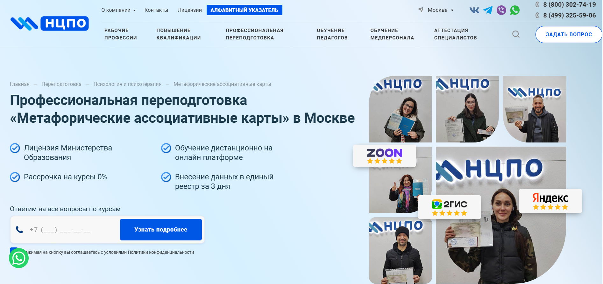- ✅ Официальный сайт: ncpo.ru
- 💸 Цена: от 19 800 ₽ (при оплате в день оформления действует скидка 3 000 ₽)
- 💳 Рассрочка: 0%, от 1 650 ₽/мес
- 📚 Формат: дистанционное обучение, видеолекции, методические материалы, тесты, личный кабинет, доступ 24/7
- ⏳ Продолжительность: от 250 до 1600+ академических часов
- 📜 Документ: диплом о профессиональной переподготовке с внесением в реестр ФРДО
- 📝 Трудоустройство: повышение шансов на получение должности, актуализация квалификации
- 🔷 Для кого подходит курс: специалисты с дипломом СПО или ВО, практикующие психологи, желающие освоить новые техники
Особенности:
Программа позволяет научиться применять метафорические ассоциативные карты в психологическом консультировании и терапевтической работе. Благодаря дистанционному формату студенты могут совмещать обучение с работой. Весь учебный процесс проходит онлайн через удобную платформу, доступ открыт круглосуточно. Программа подойдет тем, кто хочет освоить проективные методики с нуля или пройти переаттестацию для обновления навыков. По окончании курса выдается диплом, соответствующий требованиям профстандарта. Учебный центр имеет лицензию Министерства образования РФ, обучение проходит официально, по договору.
Чему учатся студенты:
- Использованию метафорических и ассоциативных карт для диагностики и помощи клиенту
- Применению мак-карт в индивидуальных и групповых консультациях
- Навыкам работы с проективными методиками
- Созданию и выбору авторских и универсальных колод
- Построению структуры консультационной сессии с применением мак
- Эффективному анализу запросов клиентов
- Освоению техник для работы с эмоциями, травмами и внутренними ресурсами
Преподаватели:
- Терешков Александр Леонидович — генеральный директор НЦПО
- Грезнева Диана — преподаватель курса, практикующий специалист
- Малкова Анна — эксперт в области психологии, преподаватель центра
Преимущества:
- Диплом с внесением данных в госреестр
- Обучение с любого устройства и без отрыва от работы
- Официальный договор и юридические гарантии
- Подходит для начинающих и опытных психологов
- Можно изучать материал в любом удобном ритме
- Методика соответствует требованиям современного рынка труда
- Доступ к материалам сохраняется навсегда
- Удобный формат оплаты и прозрачные условия
Отзывы учеников:
Студенты отмечают доступный формат дистанционного обучения и возможность совмещать курс с основной работой. Чаще всего выделяют качество методических материалов, поддержку преподавателей и полезность практических заданий. Большинство выпускников подчеркивают, что освоенные техники помогли расширить спектр профессиональных услуг.
Перейти на официальный сайт курса12. Онлайн-курсы метафорических ассоциативных карт – Международная школа профессий
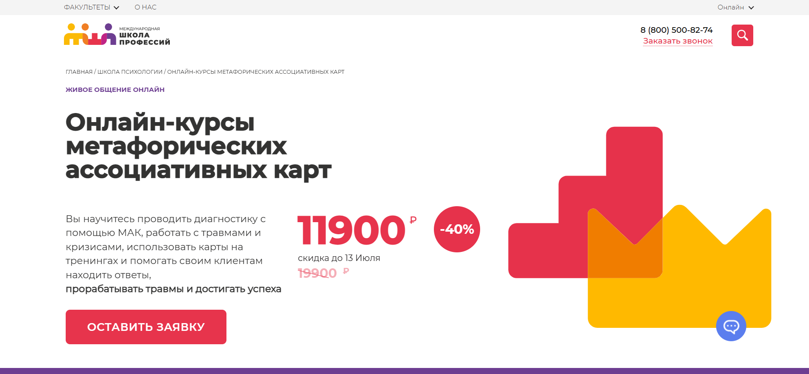
- ✅ Официальный сайт: online.videoforme.ru
- 💸 Цена обучения: от 11 900 ₽ (скидка 40% ).
- 💳 Рассрочка: от 992 ₽ в месяц, возможна через социальные программы (материнский капитал, социальный контракт, налоговый вычет).
- 📚 Формат: дистанционные занятия, вебинары, записи уроков, интерактивные задания, живое общение с наставниками.
- ⏳ Продолжительность: от 3 недель до 37 недель (в зависимости от выбранной программы).
- 📜 Документ: персональный сертификат или диплом специалиста.
- 📝 Трудоустройство: возможно через развитие практических навыков и создание портфолио.
- 🔷 Для кого подходит курс: для профессиональных психологов, начинающих консультантов, коучей и всех, кто хочет освоить техники работы с метафорическими картами.
Особенности:
Обучение проходит в дистанционном формате, что дает возможность учиться в любом удобном месте и совмещать учебу с работой или путешествиями. Курсы ориентированы на применение метафорических карт в практике психологического консультирования, коучинга и тренингов. В основе программы — реальные кейсы, практические задания и личное сопровождение от опытных наставников. Доступ к материалам сохраняется 3 месяца, обучение адаптировано под любые графики. Вы можете выбрать базовый курс для быстрого старта или пройти углубленное обучение профессии с дипломом. Программа признана эффективной более чем 70 000 выпускниками из пяти стран.
Чему учатся студенты:
- Понимать принципы выбора и применения метафорических карт
- Использовать МАК-карты в индивидуальных и групповых консультациях
- Проводить диагностику психологических запросов клиентов
- Работать с кризисами, травмами и эмоциональными состояниями
- Интегрировать МАК в тренинги и коучинговые программы
- Создавать авторские колоды и разрабатывать уникальные сценарии сессий
Преподаватели:
- Алла Логинова — ведущая трансформационных игр, коуч-энергопрактик, преподаватель Международной школы профессий, обучила более 100 учеников работе с метафорическими картами
Преимущества:
- Доступное дистанционное обучение без затрат на транспорт
- Живое сопровождение опытных наставников
- Гибкий график и доступ к записям занятий
- Поддержка в оформлении социальных льгот и оплате маткапиталом
- Обширная практика на реальных запросах клиентов
- Программы разной глубины — от базовых до профессиональных
- Сертификаты и дипломы, подтверждающие квалификацию
- Более 14 лет опыта в обучении специалистов в сфере психологии
Отзывы учеников:
Слушатели высоко оценивают практическую направленность курса, удобный дистанционный формат и внимательное отношение преподавателей. Особенно часто отмечается, что обучение помогает научиться эффективно использовать метафорические карты и дает реальные инструменты для работы с клиентами. Также положительно отзываются о возможности совмещать учебу с личной занятостью и получать обратную связь от кураторов.
Перейти на официальный сайт курса13. Метафорические ассоциативные карты как инструмент работы психолога — Национальная академия дополнительного профессионального образования
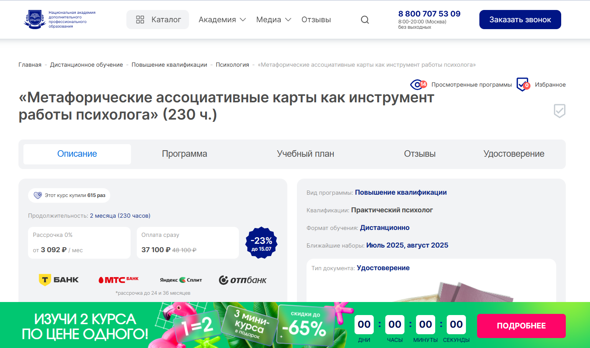
- ✅ Официальный сайт: nadpo.ru
- 💸 Цена: 37 100 ₽ (скидка 23%; ранее — 48 100 ₽)
- 💳 Рассрочка: от 3 092 ₽ в месяц, доступна на 24 или 36 месяцев, 0% переплат
- 📚 Формат: дистанционный формат — видеоуроки, задания, тесты, библиотека ЛитРес и Библиоклуб
- ⏳ Продолжительность: 2 месяца (230 часов)
- 📜 Документ: удостоверение о повышении квалификации, внесенное в ФИС ФРДО
- 📝 Трудоустройство: поможет начать или расширить психологическую практику
- 🔷 Для кого подходит курс: для практикующих психологов, начинающих специалистов и всех, кто хочет научиться применять метафорические ассоциативные инструменты в консультировании
Особенности:
Программа позволяет освоить практическое применение ассоциативных карт в психологической консультации и использовать их как эффективный способ работы с подсознанием клиента. Обучение проходит в дистанционном формате на удобной платформе без привязки ко времени. Курс включает в себя методы, основанные на проективных техниках, помогающих выявить и проработать эмоциональные травмы, деструктивные установки и ограничивающие убеждения. Доступен кешбэк в баллах и возможность обучения без выходных. Важно, что документ о прохождении курса официально регистрируется в государственных системах, а после завершения программы можно начать консультировать онлайн или офлайн.
Чему учатся студенты:
- Применению мак-карт при работе с клиентами разных возрастов и запросов
- Определять психологические блоки через визуальные образы
- Проводить индивидуальные, семейные и групповые консультации
- Навыкам выбора колод и правильного построения сессий
- Использовать техники глубинной работы с бессознательным
- Развивать профессиональные навыки в консультировании
Преподаватели:
- Информация о преподавателях не указана на официальном сайте
Преимущества:
- Дистанционное образование без выходных
- Применение универсальных колод в любой сфере консультирования
- Официальный документ о повышении квалификации
- Возможность совмещать обучение с работой
- Доступ к дополнительным учебным материалам и библиотекам
- Подходит для начинающих и опытных специалистов
- Развитие практических навыков для применения мак в работе
- Формирование профессиональных инструментов психолога
Отзывы учеников:
Студенты отмечают удобный формат дистанционного обучения и большое количество практических заданий. Отмечают, что научились применять мак-карты в психологических консультациях с реальными клиентами. Также в отзывах подчеркивают, что обучение помогло начать частную практику и расширить спектр оказываемых услуг.
Перейти на официальный сайт курса14. Практикум по применению метафорических ассоциативных карт в психологическом консультировании — Национальная академия дополнительного профессионального образования
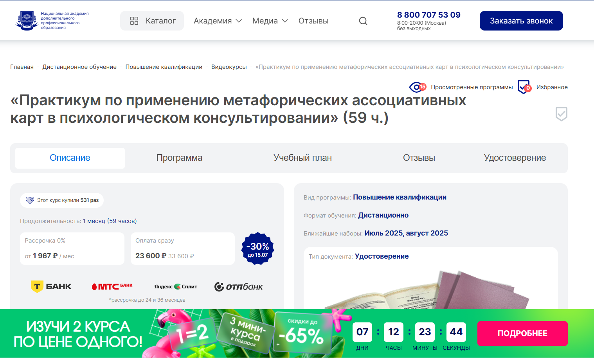
- ✅ Официальный сайт: nadpo.ru
- 💸 Цена: 23 600 ₽ (со скидкой, обычная цена — 33 600 ₽)
- 💳 Рассрочка: 0% от 1 967 ₽ в месяц, доступна до 36 месяцев
- 📚 Формат: дистанционный формат: видеокурсы, домашние задания, итоговые задания
- ⏳ Продолжительность: 1 месяц (59 часов)
- 📜 Документ: удостоверение о повышении квалификации государственного образца (вносится в ФИС ФРДО)
- 📝 Трудоустройство: дает право на законную практику в сфере психологического консультирования
- 🔷 Для кого подходит курс: для профессиональных психологов, консультантов, коучей и специалистов, желающих научиться применять мак карты в практике
Особенности:
Курс разработан с учетом реальных запросов клиентов, с фокусом на практическое применение метафорических и ассоциативных карт. Благодаря дистанционному формату, студенты могут совмещать обучение с работой или личной жизнью. Программа подходит как для индивидуальных консультаций, так и для групповой терапии. Использование мак-карт помогает клиенту раскрыть скрытые состояния, осознать внутренние барьеры и найти решение психологических проблем. Курс позволяет освоить технику выбора колоды, анализ ассоциаций и методы интерпретации образов. После завершения обучения выпускники уверенно используют этот инструмент в профессиональной практике. Образовательная платформа интуитивно понятна, доступен кешбэк и бесплатный доступ к библиотекам. Программа входит в ТОП-3 онлайн-школ по соотношению цена-качество.
Чему учатся студенты:
- Научиться применять метафорические ассоциативные карты в психологической консультации
- Освоить технику выбора подходящей колоды
- Анализировать ассоциативные образы клиентов
- Использовать мак карты в индивидуальных и групповых консультациях
- Повышать уровень профессиональных навыков в работе с эмоциональными состояниями
Преподаватели:
- Тарасов Сергей Васильевич — кандидат психологических наук, доцент, практик с 2000 года
- Егорова Наталья Николаевна — кандидат психологических наук, стаж 22 года
- Челнокова Ирина Александровна — кандидат психологических наук, член Российской ассоциации КПТ, стаж с 2008 года
- Санжапова Эльмира Викторовна — кандидат педагогических наук, доцент, стаж с 2005 года
Преимущества:
- Программа соответствует требованиям профессионального образования
- Обучение проходит в дистанционном формате на удобной платформе
- Рассрочка без переплат и возможность кешбэка
- Бесплатный доступ к библиотекам ЛитРес и БиблиоКлуб
- Данные об обучении вносятся в государственный реестр
- Подходит для любых форматов психологической практики
- Можно начать обучение с нуля и быстро выйти на профессиональный уровень
Отзывы учеников:
В отзывах выпускники отмечают высокий уровень преподавателей и доступность материалов. Особенно выделяют практическую направленность занятий, возможность совмещать обучение с работой и полезность мак-карт в консультировании. Часто упоминается удобный формат и понятное изложение материала.
Перейти на официальный сайт курса15. Метафорические ассоциативные карты как инструмент работы психолога – Национальный центральный институт развития дополнительного образования
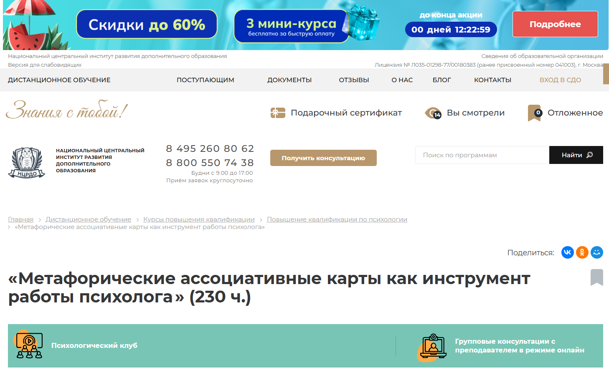- ✅ Официальный сайт: ncrdo.ru
- 💸 Цена: 31 400 ₽ со скидкой, обычная цена 40 800 ₽
- 💳 Рассрочка: 872 ₽ в месяц на 36 месяцев
- 📚 Формат: дистанционное обучение с видеоуроками, практическими заданиями, тестами и доступом к библиотеке вебинаров
- ⏳ Продолжительность: 2 месяца (230 академических часов)
- 📜 Документ: удостоверение о повышении квалификации
- 📝 Трудоустройство: предоставляется поддержка в трудоустройстве и возможность возврата 13% стоимости обучения
- 🔷 Для кого подходит курс: профессиональных психологов, коучей, студентов профильных направлений, специалистов, работающих с клиентскими запросами
Особенности:
Программа реализуется в дистанционном формате, что позволяет совмещать обучение с основной работой или учебой. Применение метафорических и ассоциативных карт рассматривается как эффективный способ психологического консультирования в индивидуальной и групповой работе. Курс дает возможность научиться использовать метафорические образы для работы с бессознательным, прорабатывать травмы, конфликты и эмоциональные блоки. Студенты учатся выбирать мак карты под различные запросы клиентов, применять универсальные техники и модифицировать их под конкретную ситуацию. Все материалы размещаются на удобной платформе, задания можно выполнять в любое время в рамках учебного графика. Предусмотрены групповые консультации и практикумы с преподавателями. По завершении обучения выдается удостоверение, данные которого вносятся в федеральный реестр документов.
Чему учатся студенты:
- Применению метафорических и ассоциативных карт в индивидуальных и групповых консультациях
- Методам работы с травматическим опытом, психосоматикой, утратой, семейными и детско-родительскими отношениями
- Выбору и анализу колод под разные запросы
- Техникам коучинга с применением мак карт
- Организации дистанционной консультационной практики
Преподаватели:
- Мельникова Елена Васильевна — опыт с 2010 года
- Тышкевич Марина Юрьевна — опыт с 2006 года
- Шевченко Дария Игоревна — опыт с 2018 года
- Салихова Мария Романовна — опыт с 2007 года
Преимущества:
- Возможность проходить обучение в любом удобном месте и в свободное время
- Программа аккредитована, удостоверение вносится в федеральный реестр
- Курс подходит для работы с широким кругом клиентских запросов
- Развивает профессиональные навыки психологов и консультантов
- Доступ к Библиоклубу и ЛитРес входит в стоимость
- Гибкая система оплаты с возможностью рассрочки
- Практическая направленность и обратная связь от преподавателей
Отзывы учеников:
Слушатели курса на платформах Яндекс, Google и 2ГИС особенно выделяют насыщенность программы, профессионализм преподавателей и доступность учебных материалов. Многие отмечают, что научились эффективно применять метафорические карты на практике, а дистанционный формат оказался удобным и гибким.
Перейти на официальный сайт курса16. Применение метафорических ассоциативных карт в психологическом консультировании – Национальный центральный институт развития дополнительного образования
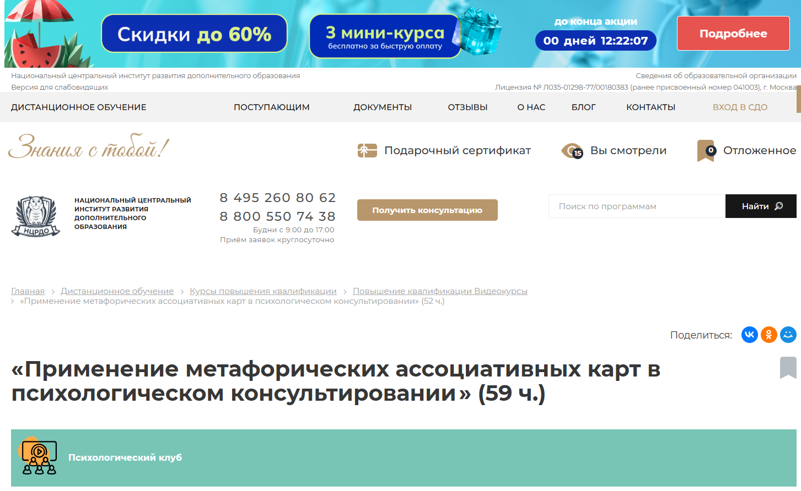
- ✅ Официальный сайт: ncrdo.ru
- 💸 Цена: 23 600 ₽ ( вместо 36 600 ₽)
- 💳 Рассрочка: доступна от института, первый взнос от 30%, 1 967 ₽ в месяц
- 📚 Формат: видеокурсы, дистанционное обучение, тесты, методические материалы, доступ к ЭБС «Библиоклуб»
- ⏳ Продолжительность: 1 месяц (59 академических часов)
- 📜 Документ: удостоверение о повышении квалификации установленного образца
- 📝 Трудоустройство: способствует развитию навыков для профессиональной практики
- 🔷 Для кого подходит курс: для специалистов, работающих в сфере психологической консультации, студентов с профильным образованием, практикующих психологов
Особенности:
Программа создана для тех, кто стремится научиться применять метафорические ассоциативные карты в индивидуальных консультациях и групповой работе. Курс проходит в дистанционном формате, что делает его удобным для совмещения с основным графиком. Материалы курса размещены в СДО, что дает доступ в любое время. В рамках обучения студенты осваивают навыки использования мак-карт, изучают способы адаптации подхода к разным клиентским запросам и возрастным категориям. Обучение завершается тестированием и получением официального удостоверения. Институт является резидентом «Сколково», что подтверждает качество образования и участие экспертов-практиков. Доступ к ЛитРес предоставляется в подарок.
Чему учатся студенты:
- Применять метафорические ассоциативные карты в психологической консультации
- Использовать карты в индивидуальной и групповой работе
- Адаптировать методику к разным типам клиентов
- Развивать навыки саморефлексии и анализа
- Применять МАК-карты для решения различных запросов клиентов
- Формулировать цели и выстраивать консультативный процесс с помощью карт
Преподаватели:
- Мельникова Елена Васильевна — опыт научно-практической деятельности с 2010 года
- Тышкевич Марина Юрьевна — с 2006 года в сфере психологии
- Шевченко Дария Игоревна — ведет практику с 2018 года
- Салихова Мария Романовна — практикующий психолог с 2007 года
Преимущества:
- Обучение проходит в удобном дистанционном формате
- Все материалы доступны онлайн круглосуточно
- Сертификат выдается по завершению обучения
- Курс разработан практикующими специалистами
- Актуальные знания по применению мак-карт в психологической практике
- Возможность использовать полученные навыки сразу после окончания курса
- Поддержка кураторов на всех этапах
- Доступ к дополнительным образовательным ресурсам
Отзывы учеников:
Студенты отмечают удобный формат обучения, качественные материалы и профессионализм преподавателей. Особо выделяют возможность освоить практические навыки, которые помогают в работе с клиентами, и гибкий график занятий. Уровень курса соответствует ожиданиям как начинающих специалистов, так и опытных психологов.
Перейти на официальный сайт курса17. Метафорические ассоциативные карты как инструмент работы психолога – Центральная академия профессиональной переподготовки и повышения квалификации кадров
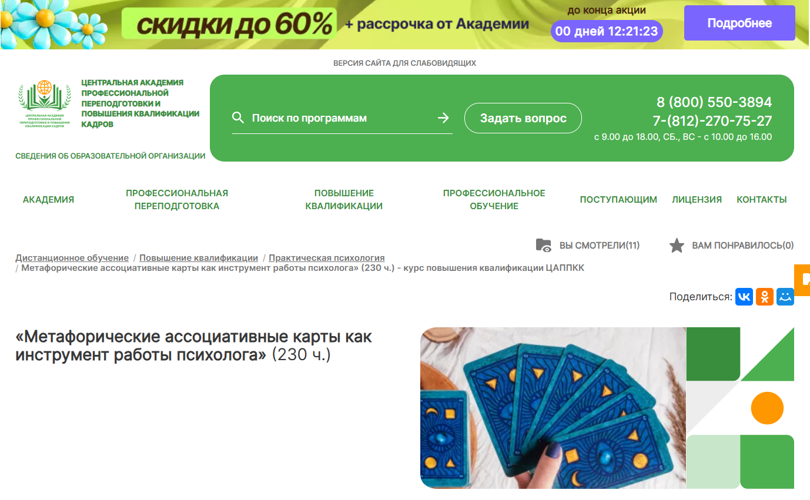
- ✅ Официальный сайт: appkk.ru
- 💸 Цена: 26 300 ₽ (скидка от полной стоимости 31 500 ₽)
- 💳 Рассрочка: 12 месяцев по 2 192 ₽
- 📚 Формат: дистанционное обучение, видеолекции, тесты, вебинары, доступ к библиотеке и аудиолекциям
- ⏳ Продолжительность: 2 месяца (230 академических часов)
- 📜 Документ: удостоверение о повышении квалификации, вносится в реестр ФИС ФРДО
- 📝 Трудоустройство: курс помогает развить востребованные навыки и усилить позиции на рынке труда
- 🔷 Для кого подходит курс: специалисты в сфере психологии, студенты, желающие изучить методы психологического консультирования
Особенности:
Курс предлагает дистанционный формат с доступом к учебным материалам 24/7, что удобно для тех, кто совмещает обучение с работой. Освоение техники работы с ассоциативными картами помогает специалисту понять запросы клиентов и применять метафорические образы в психологической практике. Материалы курса разработаны практикующими психологами и включают авторские методики. Слушателям предоставляется бессрочный доступ к вебинарам и поддержка куратора. Полученные знания позволяют работать с индивидуальными и групповыми запросами, применяя мак-карты в психологическом консультировании.
Чему учатся студенты:
- Применять метафорические ассоциативные карты в работе с клиентами
- Анализировать состояния клиента через визуальные образы
- Проводить индивидуальные и групповые консультации
- Использовать мак как инструмент в коррекционной и диагностической работе
- Подбирать колоды под разные типы запросов
Преподаватели:
- ФИО преподавателя не указаны на сайте – занятия проводят опытные практики с собственными методиками
Преимущества:
- Дистанционный формат без привязки к месту обучения
- Поддержка куратора и техподдержка ежедневно до 21:00
- Сохранение доступа к материалам даже после завершения обучения
- Бесплатная библиотека и аудиолекции
- Официальный документ, подтверждающий квалификацию
- Актуальные практики и примеры из реальной психологической практики
- Обучение можно совмещать с работой или учебой
- Легкий вход: принимаются фото документов в электронном виде
Отзывы учеников:
Студенты отмечают доступный и понятный материал, удобный график обучения и профессиональную поддержку. Часто подчеркивают практическую направленность и реальную пользу от применения метафорических карт в психологической работе.
Перейти на официальный сайт курса18. Практические навыки применения метафорических ассоциативных карт в психологическом консультировании – Центральная академия профессиональной переподготовки и повышения квалификации кадров
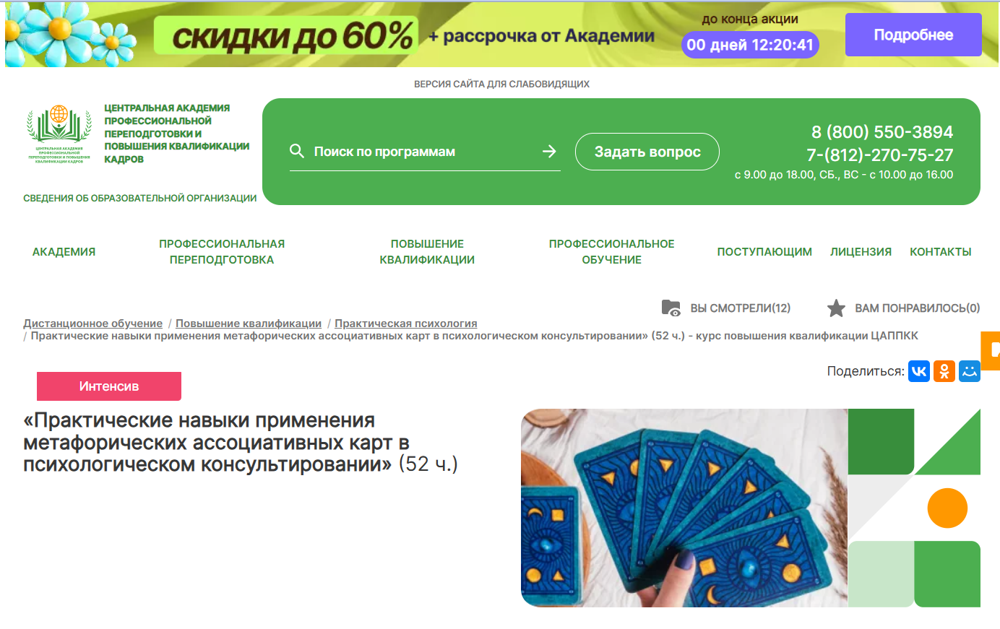
- ✅ Официальный сайт: appkk.ru
- 💸 Цена: 23 100 ₽ (вместо 27 600 ₽)
- 💳 Рассрочка: на 12 месяцев от 1 925 ₽/мес, 0% переплаты от Т-банка и Сбера
- 📚 Формат: заочное обучение с применением дистанционных образовательных технологий, видеолекции, тесты, вебинары, домашние задания
- ⏳ Продолжительность: 2 месяца (52 часа), занятия по пятницам, с 19:00 до 21:15 (МСК)
- 📜 Документ: удостоверение о повышении квалификации, вносится в ФИС ФРДО
- 📝 Трудоустройство: повышение профессиональных навыков, улучшение квалификации
- 🔷 Для кого подходит курс: психологам, психотерапевтам, педагогам, консультантам, специалистам смежных сфер, студентам профильных вузов
Особенности:
Курс создан для тех, кто хочет освоить технику применения метафорических ассоциативных карт в психологическом консультировании. Он подходит как для индивидуальных, так и для групповых или семейных консультаций. Программа разработана методистами академии с опорой на авторские методики. Все материалы доступны 24/7, что удобно для совмещения с работой или учебой. Преподаватель всегда на связи, чтобы помочь с любыми вопросами. По завершению обучения доступ не ограничивается, а все документы вносятся в государственный реестр. Благодаря дистанционному формату заниматься можно из любой точки страны, в комфортном темпе и без привязки к месту. Доступна поддержка без выходных с 9:00 до 21:00.
Чему учатся студенты:
- Применению мак карт в психологической консультации
- Работе с различными запросами клиентов с помощью метафорических ассоциативных карт
- Выбору универсальных и авторских колод
- Проведению индивидуальных, групповых и семейных консультаций
- Использованию метафорических техник для выявления внутренних процессов
- Созданию собственных упражнений и сценариев работы с мак
Преимущества:
- Доступ ко всем материалам даже после окончания обучения
- Поддержка куратора и технической службы ежедневно
- Формат занятий идеально подходит для совмещения с работой
- Включение в ФИС ФРДО — подтверждение официального статуса курса
- Практическая направленность обучения, ориентированная на реальных клиентов
- Возможность изучать материал в любом удобном месте и в удобное время
- Отсутствие противопоказаний к использованию МАК, работа с детьми и взрослыми
- Фокус на решении реальных психологических проблем
Отзывы учеников:
Студенты отмечают понятную подачу материала, грамотную организацию курса и практическую направленность. Особенно выделяют оперативную техподдержку, полезные вебинары и возможность работать с разными видами колод. Также хвалят преподавателей за доступность и профессионализм.
Перейти на официальный сайт курса19. Метафорические ассоциативные карты — Учебный центр «НЦПО»
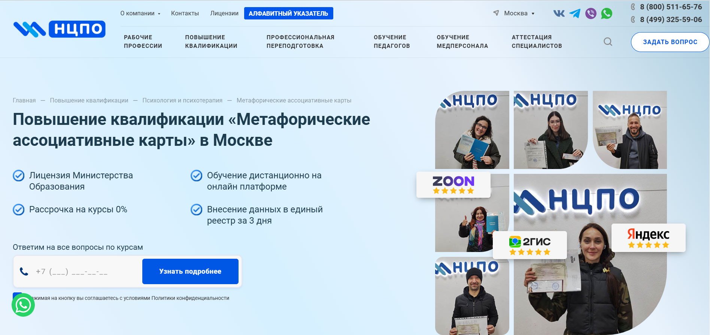- ✅ Официальный сайт: ncpo.ru
- 💸 Цена: от 10 800 ₽ (скидка 2 500 ₽ при оплате в день заказа)
- 💳 Рассрочка: 0%, от 900 ₽/мес
- 📚 Формат: дистанционное обучение: видеоуроки, практические задания, тесты, доступ 24/7
- ⏳ Продолжительность: от 72 до 144 академических часов
- 📜 Документ: удостоверение о повышении квалификации, регистрация в ФИС ФРДО
- 📝 Трудоустройство: повышение квалификации для допуска к работе, продвижения и надбавки
- 🔷 Для кого подходит курс: специалисты с профобразованием, психологи, педагоги, медработники
Особенности:
Курс обучения метафорическим ассоциативным картам проходит полностью онлайн на удобной платформе с круглосуточным доступом. Используется гибкий формат, позволяющий совмещать обучение с работой. Выдается официальное удостоверение, данные вносятся в реестр ФИС ФРДО. Занятия направлены на развитие профессиональных навыков и применение проективных методик в психологическом консультировании. Программа подходит для работы с индивидуальными клиентами и группами. Обучение сопровождается методическими материалами и поддержкой преподавателей. Стоимость курса доступна, а оплата возможна в рассрочку без процентов.
Чему учатся студенты:
- Применению мак в работе с психологическими запросами
- Навыкам выбора авторской и универсальной колоды
- Техникам диагностики и анализа через изображения
- Использованию карт в индивидуальных и групповых консультациях
- Применению мак в семейной терапии и детском консультировании
Преподаватели:
- Терешков Александр Леонидович — генеральный директор, практик, руководитель центра
- Грезнева Диана — преподаватель программ по психологии, арт-терапии, мак
- Малкова Анна — специалист с практическим опытом в области психологического консультирования
Преимущества:
- Официальная лицензия Минобрнауки РФ
- Бессрочный доступ к учебным материалам
- Срочная выдача удостоверения — за 1 день после окончания курса
- Поддержка по всем вопросам и помощь при поступлении
- Возможность применения мак в различных форматах психологической помощи
- Проверка документов работодателями через реестр ФРДО
- Варианты оплаты: наложенный платеж, онлайн, наличными
- Скидки и бонусы при групповом обучении
Отзывы учеников:
Слушатели курса часто отмечают удобный дистанционный формат, простоту подачи информации и актуальность знаний. Подчеркивают практическую направленность занятий, полезность мак в работе с клиентами и поддержку преподавателей. Высоко оценивают оформление документов и оперативную обратную связь от центра.
Перейти на официальный сайт курса- 5-дневный интенсив поможет научиться применять метафорические ассоциативные карты в психологической практике.
- Формат курса – дистанционный, все материалы доступны онлайн в любом удобном формате.
- Подходит как для профессиональных психологов, так и для начинающих специалистов, стремящихся освоить технику работы с ассоциативными картами.
- Участники научатся работать с запросами клиентов, выявлять скрытые состояния и использовать визуальные образы как инструмент диагностики.
- Практические упражнения позволят сразу применять методы использования мак-карт в индивидуальных консультациях.
- Программа дает навыки использования универсальных колод для решения психологических задач в личной и групповой терапии.
- После прохождения обучения слушатели смогут применять полученные знания в семейном консультировании и профессиональной деятельности.
- Бесплатный доступ дает возможность попробовать курс без оплаты и оценить качество обучения.
- Курс сопровождается поддержкой куратора и возможностью задать вопросы по ходу прохождения.
- Идеально для тех, кто хочет научиться помогать клиенту с помощью метафорических образов без вложений.
- Метафорические ассоциативные карты помогают клиенту лучше понимать внутренние процессы и актуальные потребности.
- Подходят для использования в индивидуальных консультациях, групповой терапии, семейном консультировании и коучинге.
- Идеальны для профессиональных психологов, коучей и специалистов помогающих профессий, работающих онлайн и офлайн.
- Доступ к колоде предоставляется бесплатно в дистанционном формате — по ссылке после регистрации на сайте.
- Карты можно применять в работе с любыми запросами клиентов, включая мотивацию, цели и эмоциональные состояния.
- Инструкция по применению МАК прилагается от сертифицированного коуча, демонстрируются методы использования на практике.
- Использование МАК-карт помогает находить решения психологических проблем и расширять профессиональные навыки.
- Формат подходит как для начинающих специалистов, так и для тех, кто прошёл обучение в сфере практической психологии.
- Универсальные колоды можно применять с клиентами любого возраста и на любом этапе психологического консультирования.
- Получить карты можно в любое удобное время — без оплаты и ограничений по времени использования.
- Обучение в дистанционном формате длится 5 дней, каждый день посвящён отдельной теме и практической работе.
- Курс помогает освоить технику применения метафорических ассоциативных карт в психологической практике и консультировании.
- Подходит как для профессиональных психологов, так и для начинающих, стремящихся развить практические навыки работы с клиентами.
- Участники научатся использовать метафорические изображения для анализа отношений, финансовых затруднений и поиска предназначения.
- Демонстрационные сессии и онлайн-занятия по запросам участников усиливают эффект обучения и позволяют работать с любыми запросами клиентов.
- В качестве подарка предоставляется авторская колода карт для самостоятельного или профессионального использования.
- Обучение проходит на удобной платформе с возможностью совмещать занятия с основным графиком.
- После успешного завершения обучения выдается сертификат, подтверждающий освоение программы.
- Методика обучения включает практическое применение инструментов психологической помощи и ассоциативных карт в индивидуальных консультациях.
- Формат подойдёт для желающих освоить навыки использования мак-карт в групповой терапии и семейном консультировании.
- Проведение индивидуальных и групповых консультаций с использованием МАК;
- Помощь клиентам в поиске внутренних ресурсов и решений;
- Работу с психологическими травмами, страхами, конфликтами, самооценкой;
- Проведение развивающих и терапевтических тренингов;
- Сопровождение клиентов в процессе личностного роста и изменений;
- Создание авторских программ и курсов с применением МАК.
- Понимание основ психологии и психотерапии;
- Навыки работы с метафорическими ассоциативными картами;
- Знание техник арт-терапии и проективных методик;
- Умение создавать безопасное терапевтическое пространство;
- Навыки активного слушания, эмпатии и ненасильственного общения;
- Понимание этики консультирования и конфиденциальности;
- Умение анализировать и интерпретировать клиентские ответы через МАК.
- Психологи, владеющие МАК, востребованы в частной практике, образовательных учреждениях, центрах ментального здоровья;
- МАК активно используются коучами, HR-специалистами и педагогами;
- Онлайн-консультирование даёт возможность зарабатывать из любой точки мира.
- Начинающие специалисты зарабатывают от 25 000 до 40 000 рублей в месяц;
- Опытные практики с постоянным потоком клиентов получают от 60 000 до 120 000 рублей и выше;
- Ведущие тренеры и авторы программ — до 200 000 рублей и более.
- Онлайн-курсы и вебинары от психологических школ и тренеров;
- Очные тренинги по МАК в вашем городе;
- Дополнительное образование на базе психологического факультета;
- Сертифицированные программы с выдачей диплома или сертификата международного образца.
- Опыт преподавателей и их портфолио;
- Наличие практической части и супервизии;
- Отзывы учеников и уровень обратной связи от кураторов.
- Гибкий график и возможность работать удалённо;
- Минимальные стартовые вложения;
- Широкая область применения — от личной терапии до HR и коучинга;
- Быстрый вход в профессию после курса обучения;
- Постоянный спрос на услуги благодаря универсальности метода.
- Интересуется психологией и саморазвитием;
- Умеет выстраивать доверительные отношения с людьми;
- Хочет помогать другим и развиваться в профессии;
- Готов постоянно учиться и повышать квалификацию;
- Стремится к свободному графику и личной практике.
Бесплатные курсы по обучению МАК терапии
ПРАКТИКУМ «Метафорические ассоциативные карты» – IOMP
✅ Официальный сайт: info-hit.ru
Описание и особенности:
Бесплатные МАК-карты «Мне это ценно» – Психодемия
✅ Официальный сайт: psychodemia.ru
Описание и особенности:
Бесплатный курс по метафорическим картам с сертификатом – club-woman.ru
✅ Официальный сайт: mak.club-woman.ru
Описание и особенности:
Кто такой специалист по МАК-терапии?
Специалист по МАК-терапии — это профессионал, использующий метафорические ассоциативные карты (МАК) в психологическом консультировании и терапии. Эти карты помогают клиентам глубже осознать свои внутренние состояния, выявить скрытые чувства, разобраться в причинах проблем и найти пути решения.
МАК-терапия относится к инструментальным методам в психологии и коучинге. Она применяется как в индивидуальной, так и в групповой работе, подходит для работы с детьми, взрослыми, семьями и организациями.
Что делают психологи, владеющие МАК и чем занимаются?
Работа специалиста по МАК-терапии включает:
МАК являются универсальным инструментом: они могут использоваться в коучинге, психологии, педагогике, арт-терапии, семейной терапии и даже HR-сфере.
Что должен знать и уметь психолог по МАК-терапии?
Для эффективной работы специалисту необходимо обладать следующими знаниями и навыками:
Также важны личные качества — терпимость, внимательность, эмоциональная зрелость и желание помогать людям.
Востребованность и зарплаты специалистов по МАК в России в 2025 году
На фоне роста интереса к психологии и саморазвитию, профессия МАК-специалиста становится всё более востребованной. В 2025 году:
Уровень дохода специалиста зависит от опыта, клиентской базы и формата работы:
Онлайн-формат, гибкость работы и минимальные вложения делают профессию особенно привлекательной.
Как стать специалистом по МАК-терапии и где учиться?
Чтобы освоить профессию, необходимо пройти специализированное обучение. Варианты:
При выборе учебного центра важно обращать внимание на:
Базовый курс можно пройти за 1–3 месяца, далее желательно продолжить обучение на продвинутом уровне и участвовать в супервизиях.
Преимущества профессии МАК-терапевта
МАК-терапия — это мощный инструмент не только для помощи другим, но и для личностного роста самого специалиста.
Кому подходит профессия специалиста по МАК?
Эта деятельность подойдёт тем, кто:
Что такое метафорические карты и как проходит обучение их использованию?
Метафорические карты — это проективный инструмент, который применяется в психологическом консультировании для раскрытия внутренних ресурсов клиента, анализа его состояния и поиска решений. Обучение метафорическим картам включает теоретическую базу, практические упражнения и изучение различных форматов работы. Оно может проходить как в дистанционном формате, так и очно, с доступом к авторским колодам и универсальным инструментам.
Для кого подходит обучение по МАК?
Курс подходит профессиональным психологам, коучам, педагогам, социальным работникам, а также всем, кто стремится научиться помогать клиенту через применение метафорических ассоциативных карт. Также обучение может стать частью профессиональной переподготовки или дополнительного профессионального образования.
Какие навыки я получу после завершения обучения по МАК?
После завершения программы вы научитесь применять мак карты в индивидуальных и групповых консультациях, сможете использовать разные техники с учетом запросов клиентов, освоите принципы выбора колоды и научитесь создавать собственные психологические упражнения на основе МАК.
Можно ли проходить обучение в дистанционном формате?
Да, обучение проходит в дистанционном формате на удобной образовательной платформе, что позволяет совмещать обучение с работой или другими делами. Это удобный формат для тех, кто хочет развивать профессиональные навыки без привязки к месту.
Какие темы изучаются в процессе обучения МАК?
В курс входит освоение базовых техник, применение мак карт при психологических консультациях, групповой терапии, семейном консультировании, анализ различных колод, методы использования мак в решении сложных психологических запросов.
Какие форматы обучения доступны?
Курс доступен в дистанционном формате, с доступом к вебинарам, записям занятий, учебным материалам и возможностью получения консультаций от куратора курса. Также возможны интерактивные задания и групповые обсуждения.
Насколько эффективны метафорические карты в работе с клиентами?
Метафорические карты — это универсальный инструмент, который помогает клиенту лучше осознать свои внутренние процессы, эмоциональные состояния и найти решения психологических трудностей. Психологи применяют метафорические карты в разных форматах работы, и они показывают высокую эффективность при различных запросах клиентов.
Какие колоды МАК используются в обучении?
В программе рассматриваются различные колоды, включая авторские, универсальные и тематические наборы картинок, которые вызывают ассоциации и активизируют работу подсознания клиента. Выбор колоды зависит от цели сессии и тематики запроса клиента.
Как обучение МАК помогает в профессиональном развитии?
Применение метафорических карт в работе расширяет набор эффективных инструментов психолога, позволяет глубже работать с клиентами, повышает квалификацию и открывает новые подходы в психологической практике.
Какие проблемы клиентов можно решать с помощью мак-карт?
Ассоциативные карты помогают в решении внутренних конфликтов, кризисных состояний, психологических травм, работе с самооценкой, отношениями, эмоциональными трудностями. Они применимы в индивидуальной и групповой терапии.
Какие форматы консультаций можно проводить с метафорическими картами?
Вы сможете использовать метафорические карты в индивидуальных консультациях, групповых тренингах, семейной терапии, групповом консультировании, а также для самоанализа и психологической диагностики.
Как проходит итоговая аттестация и что я получу после окончания курса?
После прохождения курса участники сдают практическое задание, демонстрируя навыки применения мак. По завершению обучения выдается сертификат или удостоверение о повышении квалификации установленного образца.
Какие преимущества дает дистанционное обучение МАК?
Дистанционный формат дает гибкий график обучения, доступ к материалам в любое время, поддержку преподавателей и возможность совмещать обучение с работой. Это оптимальное решение для профессионального роста.
Какова стоимость обучения метафорическим картам?
Стоимость курса зависит от программы, объема материалов и длительности. Обучение доступно по разным ценовым форматам, часто предлагаются рассрочки и акции. Важно учитывать, что вы инвестируете в профессиональные навыки и дополнительное образование.
Можно ли начать обучение без психологического образования?
Да, курс доступен как для начинающих, так и для тех, кто уже работает в сфере психологического консультирования. Если вы только планируете получить профессию психолога, обучение МАК поможет освоить методы и приобрести практический опыт.
Какие дополнительные материалы предоставляются на курсе?
Участники получают учебные пособия, примеры сессий, практические задания, доступ к записям и авторским методикам. Это помогает глубже изучить применение мак карт и повысить уровень подготовки.
Как выбрать подходящую колоду метафорических карт?
Выбор колоды зависит от тематики запроса клиента, его психоэмоционального состояния, а также от формата консультирования. Обучение включает принципы выбора колоды, анализ изображений и ассоциаций, чтобы научиться эффективно использовать мак в работе.
Какой опыт и квалификация у преподавателей?
Курсы ведут профессиональные психологи, сертифицированные специалисты с опытом применения метафорических карт, авторы методик и практики. Они помогают развивать профессиональные навыки слушателей и готовят к практической работе с клиентами.
------------------------------------------------
Реклама. Информация о рекламодателе по ссылкам в статье.